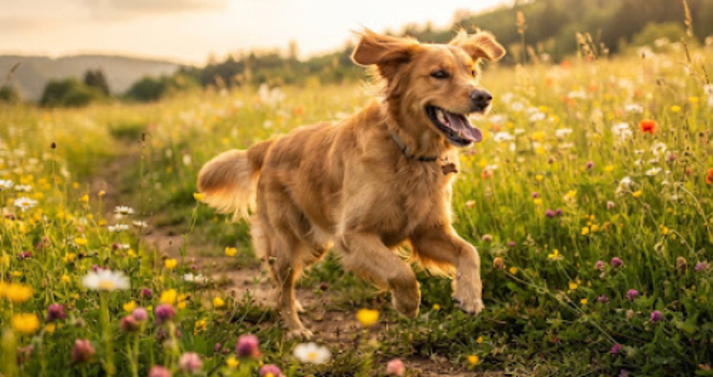

Mi primer paseo primaveral
Descubriendo por primera vez los tréboles altos, el viento fresco y persiguiendo mariposas amarillas sin cansarme nunca.
Recopilación de mis días felices a tu lado. Momentos, siestas al sol y miradas donde dejé mi corazón intacto.

Descubriendo por primera vez los tréboles altos, el viento fresco y persiguiendo mariposas amarillas sin cansarme nunca.
Ese cuadro de luz que entraba por la ventana a las cuatro de la tarde era mi rincón sagrado en toda la casa.
Orejas en guardia y cola batiendo el suelo con compás impaciente. Nadie podía engañarme cuando la escondías en tu espalda.
Siempre listo para apoyarlo en tu rodilla pidiendo un abrazo cálido apenas volvíamos de la caminata con escarcha.
Doble porción de mantequilla de maní y todos cantando a mi alrededor. Mi sonrisa de oreja a oreja lo decía absolutamente todo.
Corriendo sin prisa mientras el cielo se teñía de naranja. Me detuve a oler las amapolas y volteé a verlos sonreír.
La ventanilla entreabierta, el olor a mar y la música en la radio. Sentir la brisa era mi pasatiempo más divertido.
Un retrato sereno y luminoso lleno de amor incondicional. En mis ojos no había despedida, solo agradecimiento por haberme dado la vida más bonita y consentida que un perro pudo soñar jamás.